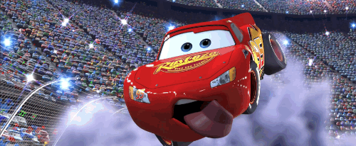

Now I don't talk about just any racer when I bring upLightning McQueen — this is the car who put Radiator Springs back on the map. He rolled into our little town looking like he owned the whole highway, number 95 gleaming and that famous red paint job without a scratch on it. Folks around here had heard his name on the radio before we ever saw him in person, always going on about being a big Piston Cup contender. None of us could have guessed back then just how much he'd end up meaning to this community.
When he first got here, I won't sugarcoat it — he was not exactly what you'd call humble. He was the kind of car who talked about himself in the third person and seemed to think Radiator Springs was just an inconvenience standing between him and his trophy. Doc didn't take to him right away, and honestly most of us didn't either. But something funny happens when you strip away the cameras and the crowds — you start to see what a car is really made of.
Doc Hudson took him under his hood, so to speak, and whatever passed between those two out on the dirt track changed McQueen for good. Doc wasn't the type to hand out compliments or life lessons freely, so when he gave his time to that young racer, we all knew it meant something. McQueen soaked it up like fresh rain on dry asphalt. By the time he left for the big race, he wasn't the same car who'd skidded into our main street.
Word got back to us about what he did at the end of that Piston Cup race — stopping just short of the finish line to help a veteran racer instead of taking the win. Sally nearly flooded her engine when she heard. That moment told us everything we needed to know about who Lightning McQueen had become. Around here, we weren't surprised one bit.
He went on to race all over the world after that, competing in grand tournaments and facing all kinds of challenges we couldn't even picture from Radiator Springs. But he always came back, and he never came back acting like a stranger. When the younger generation of racers started pushing him toward retirement, we watched him wrestle with it the same way Doc once did, and it wasn't easy to see. He handled it with more grace than most would have, and ended up passing something important along before he stepped back.
These days Lightning McQueen is more than just a racer to us — he's part of what Radiator Springs is. Tourists come through now partly because of him, and the whole town has bloomed back to life in ways we hadn't seen in decades. Mater still tells anyone who'll listen that Lightning McQueen is his best friend, and nobody argues with that. We're proud to call him one of our own.
Brent Mustangburger
"Float like a Cadillac, sting like a Beemer!! I AM SPEED I AM SPEED I AM SPEED!!!!!"
© 2026 Caleb